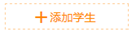
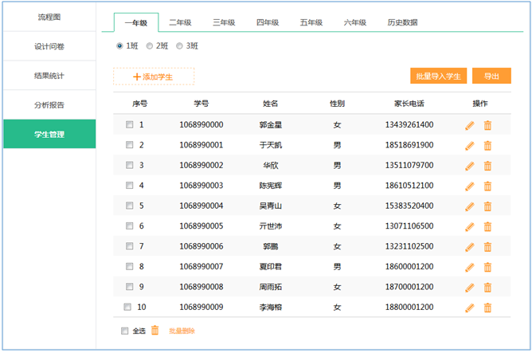

3.4.7 学生管理
用户可以在学生管理中添加、查看、删除、导出各年级各班的学生信息（如图3.4.7-1）。点击 后，可逐一添加学生信息；点出“批量导入学生”按钮，可下载“批量导入学生模板”填写后再上传，进行批量添加学生；点击“导出”按钮，可导出当前年级当前班的全部学生信息至本地计算机。注：更新学年时，各年级的学生会自动升级，如有个别情况，用户可自行进行调整。针对于已毕业学生，在历史数据中可以查看到相应学年相应班级的学生信息（如图3.4.7-2），并可点击“全部导出”按钮，导出相应的学生信息至本地计算机。
